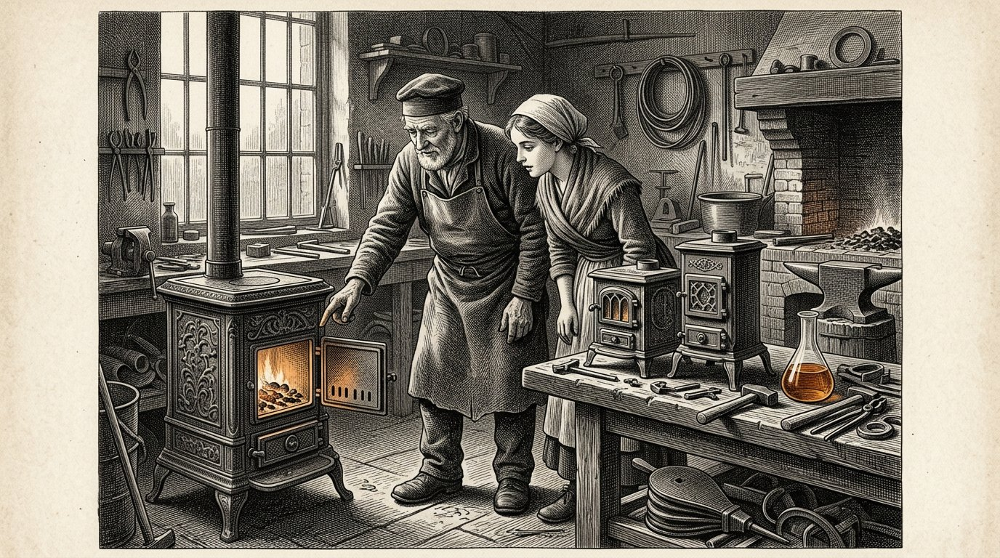

Der Kosaris
BUCH VIER
Das Buch des Hydrolysats

Der Kosaris
Das Buch des Hydrolysats
Die Flüssigkeit, die niemand gesehen hatte
Prolog — gesprochen von Kosus
Ich bin Kosus. Wenn Sie dieses Buch öffnen, bin ich bereits nicht mehr unter Ihnen. Ich habe es Alkion gegeben, damit es aufbewahrt werde, bis die Zeit reif war, und Anthea hat es gemeinsam mit ihr zu Papier gebracht.
In Buch Eins habe ich Ihnen die vier Säulen gegeben und die fünf Schiffe gezeigt. Ich habe Ihnen von der Sonne am Äquator erzählt und von der Prinzessin, die erwacht. In diesem vierten Buch geht es um eine einzige Sache, die in den anderen Büchern zwischen den Zeilen hindurchging, aber nie niedergeschrieben wurde: die Flüssigkeit, die aus dem Gras kommt, wenn Sie es kalt pressen.
Wir nennen sie Hydrolysat. Sie ist nicht eine Sache, sondern viele Dinge zugleich. Sie ist Brennstoff für Ihren Ofen, wenn die Gasflüsse zufrieren. Sie ist Bindemittel für die Wege, die Sie unter die Füße Ihrer Kinder legen. Sie ist Rohstoff für Kunststoff, der hundert Jahre statt fünf hält.
Sie ist eine Antwort auf drei Fragen, die Sie bisher mit drei verschiedenen Zuführungslinien beantwortet haben. Wer drei Fragen mit einer Antwort beantwortet, wird nicht ärmer, sondern weniger abhängig. Wer abhängig ist, wird bestimmt. Wer weniger abhängig ist, entscheidet selbst. Das ist keine Technik. Das ist Souveränität.
Ich habe Alkion in Buch Eins den Sturm hören lassen. Ich habe Petros am Kai ankommen lassen. Ich habe Ihnen die Sonne am Äquator gezeigt und das Schiff, das mit eigenem Brennstoff fährt. Dieses vierte Buch ist der Beipackzettel zu jenen Geschichten. Wer es liest, weiß nicht nur, dass die Sonne wirkt. Er weiß auch, wie.
Und er weiß, was wichtiger ist, warum es nicht ohne Gegenseitigkeit funktioniert. Die Waage von Timaris wiegt hier schwer. Eine Flüssigkeit aus dem Gras eines anderen Landes ist kein Öl, das Sie kaufen. Sie ist ein Händedruck im Glas.
Der Kosus sagt:Was Sie dreimal bei drei verschiedenen Herren kaufen, können Sie auch einmal mit einem Nachbarn bauen. Die erste Art macht Sie abhängig. Die zweite Art macht Sie zur Familie.
Von Jacobus van Merksteijn
Dies ist Buch Vier der Kosaris. Es folgt auf Buch Eins, in dem die vier Säulen gelegt wurden und die zwölf Teile die Welt vom vergessenen Hafen bis zur Entscheidung des Lesers durchquert haben. Es steht neben Buch Zwei, das von Diakrisis handelte — von der Unterscheidung zwischen dem, was feststeht, und dem, was angenommen wurde. Und neben Buch Drei, in dem Anthea zeigte, wie ein Kind auf ein selbstständiges Urteil vorbereitet wird.
Dieses vierte Buch handelt vom Klima, aber nicht so, wie die Zeitungen darüber schreiben. Es handelt von einem einzigen Stoff, der aus einem einzigen Gras gewonnen wird und drei Probleme zugleich löst: die Energie, die Ihr Haus warm hält, den Weg, auf dem Ihre Kinder zur Schule gehen, und den Kunststoff, in den ihre Bücher verpackt sind. Wenn ein einziger Stoff drei Probleme zugleich löst, verändert sich mehr als nur die Technik. Es verändert sich, wer entscheidet.
Die Figuren sind nicht neu. Alkion kennen Sie aus Teil VI von Buch Eins, wo sie den Sturm hörte, den niemand sonst hörte. Petros kennen Sie aus Teil VIII, wo er am Kai von Malta beim alten Ritter ankam. Demira steht wie immer an ihrem Ofen. Anthea ist inzwischen erwachsen, und sie ist es, die dieses Buch von Hand zu Hand weitergibt.
Ich nenne eine Sache beim Namen, die die Zeitungen lieber vermeiden. Wir nennen die Flüssigkeit Hydrolysat. Sie stammt aus einem Riesengras namens Juncao und aus einem Baum namens Moringa. Sie wird durch Kaltpressen hergestellt, nicht durch Erhitzen und nicht durch Gären. Sie kommt aus der Erde, ohne die Erde aufzubrechen. Und sie kommt aus der Sonne am Äquator, wo sie ist und wo sie bleibt.
Wer dieses Buch liest und es einen Minister lesen lässt, verändert den Minister nicht. Wer es seinem Nachbarn vorliest, verändert vielleicht das Dorf. Wie immer bei diesen Büchern: Die Macht liegt im Weitergeben, nicht darin, jemanden zu überzeugen, der taub bleiben will.
Malta, November 2026.
Teil 1

Worin Alkion zum Hafen zurückkehrt, Demira sie lehrt, was aus dem Riesengras kommt, und die erste Flasche Hydrolysat gepresst wird.

Alkion war sechsundzwanzig geworden. Sie hatte sechs Sommer im Süden auf den Plantagen von Juncao gearbeitet und war im Winter nach Hause gekommen, weil Kosus ihr geschrieben hatte, dass er ihr etwas zeigen wollte. Als sie ankam, fand sie ihn nicht mehr am Kai vor. Er war drei Wochen zuvor gestorben, und Demira hatte es ihr nicht mitteilen können, weil der Brief zu spät abgeschickt worden war.
Am ersten Morgen nach ihrer Ankunft saß sie auf der Bank neben der Bäckerei und blickte zum Hafen. Demira kam mit einem Becher warmer Milch heraus und sagte: Er hat etwas für dich hinterlassen. Es steht hinten in der Bäckerei.
Alkion folgte ihr hinein. Im Hinterzimmer stand eine hölzerne Kiste, und auf der Kiste lag ein Brief. Der Brief war in Kosus' Handschrift. Darin stand: Alkion, du hast im Süden sechs Jahre lang gelernt, was das Gras vermag. Nun ist es an der Zeit zu lernen, was das Gras ist. Öffne diese Kiste, wenn du in ruhiger Stimmung bist.
Alkion öffnete die Kiste. Darin lag eine hölzerne Schraubenpresse, klein, aber schwer, von der Art, wie man sie früher für Trauben verwendete. Und eine leere Glasflasche. Und ein Heft mit einem Ledereinband. Auf der ersten Seite stand in Kosus' Handschrift: das Hydrolysat.
Alkion las die Seiten. Sie las langsam, denn Kosus schrieb, wie er sprach, und sie hörte seine Stimme wieder. Er hatte aufgeschrieben, wie man das Gras kalt presst, ohne die Wärme, die die Süße bricht. Er hatte aufgeschrieben, welche Pflanzen man dazwischenlegt, damit das Gras sich selbst nährt und die Flüssigkeit rein bleibt. Er hatte aufgeschrieben, was daraus kommt: eine Flüssigkeit, die ohne Rauch brennt, die ohne Zement härtet, die ohne Gießen Gestalt annimmt.
Alkion schloss das Heft. Sie sah Demira an. Sie sagte: Das ist nicht ein einziges Ding. Das sind drei Dinge zugleich. Demira sagte: Genau das hat er vier Abende vor seinem Tod zu mir gesagt. Er sagte: Wenn etwas ein Ding ist, das drei Dinge zugleich tut, ist es keine Technik. Es ist ein Schlüssel.
Alkion legte den Brief wieder auf die Kiste. Sie sagte zu Demira: Dann werde ich morgen pressen.
Der Kosus sagt:Wer einen Schlüssel erbt, erbt kein Schloss. Er erbt die Pflicht zu suchen, welche Türen in seiner Zeit geöffnet wurden und welche verschlossen geblieben sind.

Demira dachte, das Pressen würde einer Traubenpresse gleichen. Alkion erklärte, dass es anders sei. Bei Trauben presst man, um den Saft herauszubekommen. Bei Juncao presst man, um die Struktur auseinanderzuziehen, ohne sie zu zerbrechen. Wenn man zu warm presst, oxidiert die Flüssigkeit und man verliert die Hälfte. Wenn man zu kalt presst, kommt nichts heraus. Die Temperatur muss der eines lauen Sommermorgens entsprechen.
Sie spannten das Gras so in die Presse, wie es im Heft stand: zuerst zwischen zwei Tüchern zerdrückt, dann mit einer Handvoll Moringa-Blättern geschichtet, die aus einem getrockneten Bündel stammten, das Kosus hinterlassen hatte. Die Moringa bewirkte etwas, das man ohne sie nicht versteht: Sie hielt die Teilchen auseinander. Ohne Moringa verklumpten sie und die Flüssigkeit wurde trüb. Mit Moringa blieb sie klar wie Bernstein.
Sie zogen die Schraube an. Eine Stunde dauerte es, bis der erste Tropfen kam. Eine weitere Stunde verging, bis ein dünner Strahl ins Glas lief. Am Ende des Tages hatten sie eine halbe Flasche.
Demira sagte: Ist das alles? Alkion sagte: Das ist aus einer Handvoll. Wenn Sie einen Ballen pressen, erhalten Sie einen halben Liter. Wenn Sie eine Scheune voll pressen, erhalten Sie hundert Liter. Wenn Sie ein Feld pressen, erhalten Sie dreitausend.
Demira sah auf die Flasche. Sie sagte: Worin brennt sie? Alkion sagte: Noch nicht in dem, was wir haben. Ich muss einen Ofen bauen, der diese Flüssigkeit liebt. Wir haben vierzig Jahre lang Öfen gebaut, die Gas lieben und Kohle lieben. Diese Flüssigkeit braucht ihren eigenen Ofen. Das kommt nächste Woche.
Demira sagte: Und der Rest? Alkion sagte: Hier ist die erste. Sie hob die Flasche gegen das Licht und sah, wie die Flüssigkeit Farbschattierungen trug, die beim Neigen des Lichts von Gelb über Bernstein bis zu beinahe Blau verliefen. Sie sagte: Kosus sagte, wer diese Flüssigkeit zum ersten Mal sieht, müsse drei Atemzüge lang schweigen. Sie schwiegen drei Atemzüge lang.
Dann sagte Demira: Ich habe in meinem Leben gesehen, wie Brot aus Teig hervorgeht und Kinder aus Frauen. Dies ist das dritte Ding, das mich in Staunen versetzt.
Der Kosus sagt:Was kalt aus etwas gemacht wird, das wächst, bewahrt die Kraft dessen, was gewachsen ist. Was heiß gemacht wird, verliert die Hälfte von dem, was es war. Wer es kalt macht, hält die Sonne fest. Wer es heiß macht, verschwendet sie.

Die Nachbarin von Demira kam am zweiten Tag, um nachzusehen. Sie hieß Marta und buk nicht, sondern verkaufte Gemüse auf dem Markt. Sie hatte vier Kinder und war es gewohnt, zu allem eine Meinung zu haben.
Marta sah die Presse und die Flasche und sagte: Was ist das für eine Schenke, die du da einrichtest? Demira sagte: Es ist keine Schenke. Es ist eine Flüssigkeit, die brennt und bindet und Gestalt annimmt. Marta sagte: Wenn sie brennt und bindet und Gestalt annimmt, ist sie keine Flüssigkeit, sondern eine Lüge.
Alkion sagte nichts. Sie nahm einen Löffel der Flüssigkeit und goss sie in eine Schale. Sie nahm eine Kerze vom Tisch und hielt die Flamme an die Schale. Die Flüssigkeit fing Feuer. Sie brannte mit gleichmäßiger blauer Flamme, ohne Rauch, und gab Wärme ab, die man im Gesicht spürte, wenn man eine Handbreit entfernt saß.
Marta sagte: Das ist Schnaps. Alkion sagte: Probier. Marta wagte es nicht. Alkion tauchte den Finger in die Schale und leckte daran. Sie sagte: Es schmeckt nach nichts. Schnaps schmeckt nach Schnaps. Das schmeckt, wie Wasser schmeckt: nach nichts.
Marta setzte sich auf die Bank. Sie sagte: Was ist es dann? Alkion sagte: Es ist das, was im Gras steckt und das Gras aufbaut. Wir haben es nun herausgelöst, ohne es zu erhitzen. Es ist alt. Jede Pflanze hat es. Wir haben nie gefragt, ob es auch herauskommen wollte, ohne dass wir es kochen.
Marta dachte nach. Sie sagte: Und das Gras selbst? Bleibt das übrig? Alkion sagte: Nach dem Pressen wird das Gras zu Futter für Kühe. Was nach dem Futter übrig bleibt, wird wieder auf dem Feld untergepflügt, auf dem das Gras gewachsen ist. Nichts geht verloren. Die Kuh frisst es, und die Erde bekommt es zurück. Wir nehmen nur die Flüssigkeit, und aus der machen wir, was wir hier machen.
Marta stand auf. Sie sagte: Wenn das stimmt, was Sie sagen, dann haben wir vierzig Jahre lang nicht nachgedacht. Demira sagte: Genau das würde Kosus sagen. Marta sagte: Und wo ist Kosus jetzt? Demira sagte: Tot. Marta sagte: Das ist schade. Ich hätte ihn gern gefragt, warum er uns das nicht vor dreißig Jahren erzählt hat.
Alkion sagte: Er hat es erzählt. Wir haben nicht zugehört. Das ist etwas anderes.
Der Kosus sagt:Wer einen neuen Stoff nicht glaubt, weil er noch nie von ihm gehört hat, glaubt auch nicht an Feuer, Bier oder Eier, bis er sie zum ersten Mal gesehen hat. Der Unterschied zwischen Unglauben und Unwissenheit ist eine einzige Vorführung auf der Bank neben der Bäckerei.

In dieser Nacht las Alkion Kosus' Heft weiter. Sie las bei einer Lampe, die mit der Flüssigkeit selbst brannte, die sie in ein altes Öllämpchen gegossen hatte. Die Lampe brannte heller als die Öllampen, an die sie gewöhnt war, und ohne den süßlichen Rauch.
Kosus hatte sechs Seiten über das geschrieben, was er Hydrolysat nannte. Auf der ersten Seite ging es darum, wie man es presst. Auf der zweiten darum, was man daraus macht. Auf der dritten darum, was man nicht tun soll. Auf der vierten um die Partner am Äquator. Auf der fünften um die Dornenhecke rings um die Machthaber. Die sechste war ein Brief, der begann mit: An den, der dies nach mir empfängt.
Auf der dritten Seite, unter dem, was man nicht tun soll, stand dies: Erhitzen Sie die Flüssigkeit nicht zu Ethanol, es sei denn, Sie befinden sich in Not. Ethanol ist ein Zwischenschritt, der alles zu Brennstoff abflacht. Wenn Sie Ethanol herstellen, verlieren Sie, was die Flüssigkeit besonders macht: ihre Vielseitigkeit. Dann können Sie nur noch heizen. Sie können nicht mehr binden oder Gestalt geben.
Alkion legte das Heft beiseite. Sie verstand, was er meinte. Der eilige Weg durch die Krise hindurch war, Ethanol herzustellen und es rasch in alten Motoren zu verheizen. Der langsame Weg war, zu lernen, was die Flüssigkeit selbst ist, und mit ihr zu bauen. Der eilige Weg würde es in die Zeitungen schaffen. Der langsame Weg würde das Jahrhundert überdauern.
Sie fuhr mit der fünften Seite fort, über die Dornenhecke. Kosus hatte geschrieben: Wer versucht, diese Flüssigkeit in Brüssel als Brennstoff durchzubringen, wird abgewiesen, weil sie in keine der bestehenden Kategorien passt. Wer versucht, sie als Bindemittel durchzubringen, wird abgewiesen, weil es dafür keine Prüfung gibt. Wer versucht, sie als Rohstoff für Plastik durchzubringen, wird ausgelacht, weil Plastik schlecht ist. Wer versucht, sie durch alle drei Türen zugleich zu bringen, wird von drei Beamten fortgeschickt, von denen jeder seine eigene Akte hat und die nicht miteinander sprechen.
Darunter hatte Kosus geschrieben: Was ist zu tun? Geh um die Hecke herum. Bau zuerst in einem Dorf. Lass es funktionieren. Wenn hundert Dörfer es tun, kommt die Hecke zu dir. Warte nicht auf sie. Sie kommt nicht von selbst.
Alkion schloss das Heft. Sie dachte: Das werde ich tun. Dorf für Dorf.
Der Kosus sagt:Ein Heft, das du von einem Lehrmeister erbst, ist keine Bibel. Es ist ein Reiseführer. Wer den Führer liest und nicht reist, hat nichts. Wer ohne Führer reist, verirrt sich. Wer liest und zugleich reist, kommt an.
Teil II
Teil 2

Worin Alkion einen Ofen baut, der Hydrolysat liebt, das Dorf einen Winter lang warm bleibt, ohne die Gasströme zu bemühen, und der Bürgermeister lernt, was der Unterschied zwischen billiger und souveräner ist.

Alkion fand einen alten Schmied auf der anderen Seite des Dorfes. Er hieß Wilm und war seit fünf Jahren im Ruhestand. In seiner Scheune standen drei Öfen, die er nie verkauft hatte, weil die Menschen inzwischen Gas hatten.
Sie sagte zu ihm: Ich habe eine Flüssigkeit, die ohne Rauch brennt. Wilm sagte: Dann ist Ihre Flüssigkeit besser als meine Öfen. Sie sagte: Ihre Öfen wurden für Öl gebaut. Ich möchte einen von ihnen für diese Flüssigkeit umrüsten. Wilm sagte: Zeigen Sie her.
Sie brachte ihm eine Flasche. Sie goss einen Löffel in eine Schale und zündete ihn an. Wilm blickte in die blaue Flamme und schwieg. Dann sagte er: Diese Flamme hat die Temperatur guter Kohlen. Aber sie neigt nicht dazu, unten zu bleiben und die Luft über sich kalt zu lassen. Sie wärmt oben und unten gleich stark. Das ist anders.
Alkion sagte: Was bedeutet das für Ihren Ofen? Wilm sagte: Das bedeutet, dass das Rauchrohr kleiner sein darf. Dass das Feuerloch größer sein darf. Dass die Wärmekammer tiefer sein darf, weil die Flamme sich nicht selbst erstickt. Ich kann in drei Wochen einen daraus machen. Wollen Sie einen?
Alkion sagte: Ich will zehn. Wilm sagte: Wofür wollen Sie zehn? Alkion sagte: Neun Nachbarn und Demira. Wenn es bei Demira funktioniert und neun Nachbarn sehen, dass es funktioniert, haben wir vor dem Ende des Winters hundert Bestellungen. Und dann haben wir ein Dorf, das auf dieser Flüssigkeit steht.
Wilm dachte nach. Er sagte: Und die Flüssigkeit selbst? Wie viel haben Sie? Alkion sagte: Jetzt eine Flasche. Nächstes Jahr eine Scheune. In drei Jahren ein Feld. Wilm sagte: Dann baue ich Ihnen drei für diesen Winter und sieben für den nächsten. Was Sie noch nicht haben, kann der Ofen nicht verlangen.
Alkion nickte. Sie sagte: Sie sind der Erste, dem ich begegne, der nicht mehr Öfen bauen will, als Flüssigkeit vorhanden ist. Wilm sagte: Ich bin alt. Ich habe keine Lust mehr, etwas zu bauen, das nicht befeuert werden kann. Das habe ich dreißig Jahre lang mit Kohle getan. Jetzt will ich nur noch bauen, was brennt.
Der Kosus sagt:Ein Handwerker, der alt geworden ist und seine Weisheit bewahrt hat, weiß, dass es unnütz ist, mehr herzustellen, als gebraucht werden wird. Ein junger Handwerker mit derselben Weisheit ist eine Seltenheit. Such ihn auf. Sag ihm, dass du ihn erkannt hast.

Drei Öfen wurden vor dem Winter aufgestellt. Einer bei Demira, einer bei Marta, einer bei Wilm selbst in seiner Scheune. Alkion versorgte alle drei mit der Flüssigkeit, die sie in jenem Sommer aus dem Feld hinter dem Dorf gepresst hatte, auf dem sie mit Zustimmung des Bürgermeisters Juncao gepflanzt hatte.
Der Winter kam früh. Im November fiel Schnee, und der Gaspreis stieg, wie er jedes Jahr stieg, wenn sich im Osten oder Südosten etwas ereignete, über das niemand genau Bescheid wusste. Demiras Nachbarn beklagten sich bei ihr über ihre Rechnung. Demira sagte: Kommt zu mir und setzt euch in die Wärme.
Sie kamen. Sie saßen in der Bäckerei, die nicht mehr mit Gas betrieben wurde. Sie blickten auf den Ofen, der anders war als ihre eigenen Öfen. Sie fragten: Was kostet es Sie? Demira sagte: Es kostet mich das Gras, das wir hier vor der Tür wachsen lassen. Es kostet mich anderthalb Wochen Pressen im Spätsommer. Es kostet mich einen Ofen, der einmal angeschafft wird und fünfundzwanzig Jahre hält. Im Übrigen kostet es mich nichts.
Die Nachbarn sagten: Und die Rechnung? Demira sagte: Es gibt keine Rechnung. Es gibt keinen Lieferanten, der mich anruft. Es gibt keinen Preis, der sich verändert, wenn irgendwo im Ausland etwas geschieht. Es gibt eine Flasche, die ich selbst gepresst habe. Wenn die Flasche leer ist, presse ich eine neue.
Die Nachbarn dachten nach. Sie sagten: Können wir solche Öfen auch bekommen? Demira sagte: Wilm baut sieben für das nächste Jahr. Wenn ihr euch jetzt eintragt, steht ihr auf der Liste. Sie trugen sich ein. Sieben Öfen waren innerhalb von zwei Tagen ausgebucht.
Am ersten Weihnachtstag saßen dreizehn Menschen in Demiras Bäckerei, weil es bei ihnen zu Hause zu kalt war und sie nicht länger zahlen wollten, was die Gasrechnung von ihnen verlangte. Demira gab ihnen Brot und sagte: Nächstes Jahr sitzt ihr zu Hause. Sie sagten: Nächstes Jahr sitzen wir zu Hause.
Alkion saß auf der Bank und sah zu. Sie dachte: Dreizehn Menschen. Das ist ein Dorf. Das ist ein Drittel der Bewohner. Das genügt, um den Bürgermeister davon zu überzeugen, dass sich etwas ändern muss.
Der Kosus sagt:Der erste Winter, in dem ein Dorf sich selbst wärmt, ohne die Ströme, die es nicht besitzt, ist der erste Winter, in dem die Bewohner dieses Dorfes entscheiden, was Weihnachten bedeutet. In allen Wintern zuvor wurde es von Menschen entschieden, die sie nicht kannten.

Der Bürgermeister kam im Januar bei Demira vorbei. Er war derselbe Bürgermeister, der in Buch Eins gelernt hatte, dass eine Rechnung, die den Bäcker traf, ein Sarg war. Er war älter geworden, und seine Schultern waren etwas nach vorn gesunken, doch seine Augen waren noch ebenso scharf.
Er sagte: Demira, ich höre, dass Sie an Weihnachten dreizehn Menschen bei sich zu Hause hatten. Demira sagte: Ich hatte sechzehn, wenn Sie die Kinder mitzählen. Der Bürgermeister sagte: Warum? Demira sagte: Weil mein Ofen warm war und ihrer nicht.
Der Bürgermeister sagte: Das ist eine lobenswerte Tat. Aber es ist auch ein Problem für mich. Wenn dreiundzwanzig Familien dieses Dorf verlassen, weil sie die Gasrechnung nicht mehr bezahlen können, verliere ich Steuereinnahmen. Wenn zweiundzwanzig Familien bleiben, weil Sie ihnen zu essen geben, verliere ich ebenfalls Steuereinnahmen, weil sie ihr Gas noch immer nicht bezahlen.
Demira sagte: Dann kommen Sie zu mir wegen einer Lösung und nicht wegen einer Beschwerde. Der Bürgermeister sagte: Genau deshalb bin ich hier. Was ist Ihre Lösung?
Demira rief Alkion hinzu. Alkion erklärte: Wenn Sie hundert Familien auf diese Flüssigkeit umstellen, haben sie gemeinsam eine Winterrechnung von nichts. Das Gras wächst auf Land, das Sie an uns verpachten. Die Pacht ist Ihr Steuereinkommen. Die Presse steht im Gemeinschaftshaus, das Ihnen gehört. Die Vermietung der Presse ist Ihr Steuereinkommen. Die Öfen werden vor Ort von Wilm hergestellt, und Wilm zahlt Steuern auf seinen Umsatz.
Der Bürgermeister sagte: Sie ersetzen also die Gasrechnung durch Pacht, Vermietung und lokale Umsätze. Alkion sagte: Und durch drei Dinge, die die Gasrechnung nicht hatte. Wir halten das Geld im Dorf. Wir lösen uns von Preisschwankungen. Und wir haben Arbeit für sieben Menschen, die sonst keine Arbeit hätten.
Der Bürgermeister dachte nach. Er sagte: Wie viel wird es mich kosten, das einzurichten? Alkion sagte: Eine Saison Land, das Sie uns leihweise überlassen, und einen Raum im Gemeinschaftshaus. Mehr nicht.
Der Bürgermeister sagte: Und wie viel wird es mir einbringen? Alkion sagte: Das kann ich Ihnen nicht in Zahlen sagen. Aber ich kann es auf einer anderen Waage für Sie wiegen. Ihr Dorf schrumpft nicht mehr. Ihre jungen Menschen bleiben. Ihre alten Menschen sterben nicht an Kälte. Und die Fabrik weiter unten, die Sie mit Strom versorgt, kann von Ihnen verlangen, was sie will, ohne dass Sie von ihr abhängig sind.
Der Bürgermeister sah Alkion an und sagte: Das habe ich vor zwanzig Jahren bei Demira gelernt. Dass die Waage, die quantitativ am besten aussieht, nicht immer die Waage ist, die das Dorf trägt. Ich werde dem Vorschlag zustimmen.
Der Kosus sagt:Ein Bürgermeister, der das Dorf danach wiegt, was es an Geld einbringt, verfehlt, was das Dorf ist. Ein Bürgermeister, der das Dorf danach wiegt, was das Dorf trägt, wiegt mit der Waage von Timaris. Diese Waage zerbricht bei schlechtem Wetter nicht.
Teil III
Teil 3

Worin die Flüssigkeit nicht mehr nur brennt, sondern auch bindet, und worin ein Provinzbeamter lernt, dass ein Weg mehr ist als der Lieferant seines Asphalts.

Wilm kam eines Nachmittags in die Bäckerei und hielt ein Klümpchen in der Hand, das er auf den Ladentisch legte. Er sagte zu Alkion: Das ist deine Flüssigkeit, mit Steinsplitt vermischt und drei Tage stehen gelassen. Ich dachte: Wenn sie brennt, was tut sie, wenn sie nicht brennt?
Alkion nahm das Klümpchen. Es war hart wie Stein. Sie ließ es auf den Boden fallen. Es zerbrach nicht. Sie sagte: Wie haben Sie das gemacht? Wilm sagte: Ich habe die Flüssigkeit mit etwas zerbrochenem Granit aus meinem Garten und mit einem Tropfen Säure aus meiner Batterie vermischt. Ich habe es in eine Blechdose getan und drei Tage draußen stehen lassen. Das ist, was dabei herauskam.
Alkion drehte das Klümpchen in ihren Händen. Sie sagte: Das ist Polymerbeton ohne Zement. Wilm sagte: Ich weiß nicht, was es ist. Ich weiß, dass es hart ist und nicht zerbricht.
Alkion kehrte zu Kosus' Schrift zurück. Auf der zweiten Seite hatte er unter der Überschrift, was man daraus macht, geschrieben: Hydrolysat ist nicht nur eines. Es ist eine Familie. Wenn man es sauer macht und es auf Mineralien trifft, wird es zu einem Bindemittel. Wenn man es heiß ansäuert, wird es zu einem Harz. Wenn man es mit Pflanzenfasern mischt und trocknet, wird es zu einem Material, das leichter als Holz und stärker ist.
Alkion las es Wilm noch einmal vor. Wilm sagte: Ihr Lehrmeister war klüger, als ich dachte. Ich habe aus Versehen getan, was er bewusst niedergeschrieben hatte.
Alkion sagte: Das ist kein Unfall. Das ist, was ein alter Handwerker tut, wenn er mit einem neuen Stoff in Berührung kommt. Er fragt ihn nicht, was er ist. Er vermischt ihn mit dem, was er kennt, und sieht, was geschieht. Das ist der kürzeste Weg.
Wilm sagte: Und nun? Alkion sagte: Nun bauen wir einen Weg.
Der Kosus sagt:Ein Handwerker, der seine Dinge mit dem vermischt, was er empfängt, ohne zuerst zu fragen, was es ist, entdeckt schneller, was funktioniert, als ein Gelehrter, der zuerst das Handbuch liest. Beide sind nötig. Wer beide versöhnt, baut.

Der Bürgermeister war bereit, ein Stück des Dorfwegs zu ersetzen. Es war ein dreihundert Meter langer Streifen zwischen dem Gemeindehaus und der Kirche. Der Streifen war vor elf Jahren asphaltiert worden, und der Asphalt bekam Risse.
Alkion und Wilm stellten die neue Deckschicht selbst her. Sie verwendeten sechs Fässer Hydrolysat, drei Tonnen feingeschlagenen Basalt aus einem leergeräumten Steinbruch und einen Eimer Zitronensäure vom Krämer. Sie mischten alles in einem alten Betonmischer und gossen es auf den vorbereiteten Untergrund.
Die Mischung härtete in drei Tagen aus. Als sie fertig war, war der Weg ockerfarben, mit einem bläulichen Glitzern, wenn das Licht von oben kam. Er war glatter als Asphalt und fühlte sich unter den Füßen etwas kälter an.
Die Menschen aus dem Dorf kamen, um ihn anzusehen. Sie gingen darüber. Sie sagten: Das ist eine schöne Farbe. Sie sagten: Er ist glatt. Sie sagten: Wie lange wird er halten?
Alkion sagte: Das wissen wir nicht. Wir denken, dreißig Jahre. Vielleicht fünfzig. Der Asphalt daneben hielt elf Jahre. Wenn dieser zwanzig Jahre hält, ist er billiger als Asphalt. Wenn er dreißig Jahre hält, ist er halb so teuer. Wenn er fünfzig Jahre hält, haben wir ein Stück Weg angelegt, das noch unsere Enkel benutzen werden.
Der Bürgermeister ging den Weg entlang. Er sagte: Und die Reparatur? Alkion sagte: Dieselbe Flüssigkeit und derselbe Splitt. Wir mischen sie und gießen sie in den Riss. Sie bindet sich mit dem bestehenden Weg, weil sie aus demselben Stoff besteht. Bei Asphalt müssen Sie die ganze Stelle neu machen.
Der Bürgermeister sagte: Und die Farbe? Alkion sagte: Die Farbe kommt von der Moringa. Wir können sie verändern, indem wir andere Pigmente hinzufügen. Was Sie sehen, ist die natürliche Farbe. Sie wird in zehn Jahren etwas oxidieren und dann brauner werden. Manche Menschen finden das schön. Andere nicht.
Der Bürgermeister sagte: Und die Rechnung? Was kostet ein Meter? Alkion sagte: Weniger als ein Meter Asphalt, solange wir die Flüssigkeit selbst herstellen und der Splitt aus der Gegend kommt. Wenn Sie es an einen Unternehmer vergeben, der es aus einer Fabrik holen muss, wird es doppelt so teuer. Wenn Sie es selbst mit den Menschen tun, die die Flüssigkeit bereits pressen, ist es billig.
Der Bürgermeister schrieb es auf. Er sagte: Ich fahre in die Provinz.
Der Kosus sagt:Ein Weg, der vom Dorf selbst angelegt wird, ist nicht nur ein Weg. Er ist eine Liste von Menschen, die wissen, wie er angelegt wurde. Wenn er Risse bekommt, weiß das Dorf, wie es ihn reparieren kann. Wer den Weg vergibt, verliert mit dem Weg auch das Wissen.

Der Bürgermeister nahm Alkion mit in die Provinz. Sie sprachen mit einem Beamten, der für die Infrastruktur verantwortlich war. Er hieß Van Dael. Er war streng und gewissenhaft und nicht schlecht.
Van Dael sagte: Zeigen Sie mir, was Sie haben. Alkion legte Proben des Weges auf seinen Schreibtisch. Sie zeigte ihm, wie hart das Bindemittel war. Sie zeigte ihm die Zeichnungen, die sie anhand der Schrift angefertigt hatte. Sie erklärte, welches Gras dort wuchs und wie man es presste.
Van Dael sagte: Das ist interessant. Aber ich kann keinen Weg genehmigen, der in keine der bestehenden Kategorien fällt. Wir haben Normen für Asphalt und Normen für Beton. Ihr Weg ist weder das eine noch das andere.
Alkion sagte: Welche Ihrer Normen darf ich zu erfüllen versuchen? Van Dael sagte: Keine. Ihr Material passt in keine der beiden Kategorien, weil die Prüfungen anders funktionieren. Ich kann es nicht abnehmen.
Alkion sagte: Sie können mich also verbieten. Van Dael sagte: Nicht verbieten. Ich kann es nicht abnehmen. Das ist etwas anderes. Sie dürfen auf eigenem Dorfboden experimentieren. Was Sie nicht dürfen, ist, diesen Weg als Provinzstraße registrieren zu lassen.
Alkion dachte nach. Sie sagte: Das ist genau, was wir brauchen. Wir wollen keine Provinzstraße sein. Wir wollen hundert Dorfwege, die funktionieren. Wenn hundert Dorfwege funktionieren, kommt vielleicht jemand, der eine neue Kategorie schafft. Bis dahin tun wir es außerhalb Ihrer Akten.
Van Dael sah sie an. Er sagte: Sie sind klug. Alkion sagte: Ich hatte einen Lehrmeister, der mir das erklärte. Er sagte: Die Regierenden kommen immer hinterher. Warten Sie nicht auf sie. Bauen Sie zuerst.
Van Dael sagte: Ich kenne diesen Lehrmeister nicht, aber er hatte recht. Und weil er recht hatte, werde ich Folgendes tun. Ich werde Ihr Dorf nicht behelligen. Ich werde auch gegenüber den anderen Beamten schweigen, die Sie gern behelligen würden. Wenn Sie zehn Dörfer haben, kommen Sie wieder. Dann haben wir vielleicht etwas, worüber man reden kann.
Alkion nickte. Sie sagte: Ich komme wieder, wenn wir zehn Dörfer haben. Van Dael sagte: Und bis dahin halten Sie den Kopf gesenkt. Es gibt Beamte in Brüssel, die nur um sich schlagen, weil es zu lange still gewesen ist. Werden Sie kein Ziel.
Sie verließ den Raum. Auf dem Flur sagte der Bürgermeister: Er war leichter, als ich dachte. Alkion sagte: Er war leichter, weil er weiß, dass er falsch liegt. Beamten, die wissen, dass sie falsch liegen, kann man helfen. Beamten, die glauben, dass sie recht haben, kann man nicht helfen. Wir hatten Glück.
Der Kosus sagt:Ein Beamter, der Sie nicht abnehmen kann, Sie aber auch nicht behelligt, ist ein Verbündeter, den Sie nicht als Verbündeten bezeichnen können. Schützen Sie ihn, indem Sie ihn nicht in Verlegenheit bringen. Wenn Sie ihn später brauchen, ist er da.
Teil IV
Teil 4

Worin Alkion nach Brüssel gerufen wird, entdeckt, dass die Dornenhecke wirklich existiert, und lernt, dass, wer nicht hindurchkann, wohl um sie herumgehen kann.

Nach drei Jahren hatte das Dorf sieben Öfen, dreihundert Meter Straße und vierzehn Nachbardörfer, die dasselbe zu tun begonnen hatten. Alkion hatte Kosus’ Schrift inzwischen sechsmal abgeschrieben und sie sechs anderen Dorfvorstehern gegeben.
Im dritten Frühjahr kam ein Brief aus Brüssel. Der Brief war von einem Berater eines Kommissars geschrieben worden. Darin stand: Sehr geehrte Frau, wir haben Kenntnis davon erhalten, dass Sie für die Infrastruktur ein nicht klassifiziertes Material verwenden, im Widerspruch zu den Richtlinien für patentierte Baumaterialien. Bitte erscheinen Sie innerhalb von dreißig Tagen in unserem Büro, um Erklärungen abzugeben.
Alkion las den Brief. Sie las ihn noch einmal. Sie fragte sich, was patentierte Baumaterialien waren und was die Richtlinie war und ob sie daran gebunden war.
Sie ging zu Demira. Demira sagte: Geh nicht. Alkion sagte: Wenn ich nicht gehe, kommt der Gerichtsvollzieher. Demira sagte: Dann kommt er. Alkion sagte: Dann muss ich wohl doch gehen. Demira sagte: Dann geh, aber geh nicht allein. Ich komme mit.
Gemeinsam fuhren sie nach Brüssel. Im Zug sagte Alkion: Was erwarten Sie, dass geschieht? Demira sagte: Sie werden versuchen, uns Angst zu machen. Sie werden uns sagen, dass wir eine Geldstrafe bekommen, wenn wir nicht aufhören. Sie werden nicht sagen, was wir falsch machen, weil wir nichts falsch machen. Sie werden sagen, dass wir in keine der Kategorien passen. Dann werden sie uns auffordern aufzuhören.
Alkion sagte: Und was soll ich sagen? Demira sagte: Dass Sie in keine ihrer Kategorien passen. Und dass Sie nicht aufhören werden, weil man mit etwas, das funktioniert, nicht aufhört, nur weil es in keine Akte passt. Und dass Sie nach Hause gehen. Das genügt.
Alkion sagte: Und wenn sie mich verklagen? Demira sagte: Dann haben sie ihren ersten Rechtsstreit über ein Material, das sie selbst nicht verstehen. Das wird ihr Problem sein, nicht unseres. Und es wird unsere erste Öffentlichkeit sein, die nicht von uns selbst ausgeht. Das ist nützlich.
Der Kosus sagt:Ein Brief aus Brüssel ist gewöhnlich kein Befehl. Er ist eine Prüfung. Wer so antwortet, wie es erwartet wird, bestätigt die Hecke. Wer so antwortet, wie es nicht erwartet wird, geht um sie herum. Beides ist gültig. Nur das Zweite führt irgendwohin.

Sie kamen an einem großen Gebäude an. Alkion hatte erwartet, dass sichtbare Dornen vorhanden wären, wie Kosus geschrieben hatte. Sie war überrascht, dass das Gebäude wie jeder andere bürokratische Palast aussah: hohe Fenster, nüchterne Gänge, an den Wänden Porträts von Menschen, die niemand kannte.
Sie wurden von dem Berater empfangen, der den Brief geschrieben hatte. Er war jung und höflich und trug einen Anzug, der ihm zu gut passte. Er führte sie in einen Sitzungsraum, in dem drei weitere Personen warteten.
Sie stellten sich vor. Der Erste war für Infrastruktur zuständig. Der Zweite für Materialien. Der Dritte für Klima. Der Vierte, der das Gespräch leitete, war für die Einhaltung der Vorschriften zuständig.
Der Verantwortliche für die Einhaltung sagte: Frau Alkion, Sie verwenden auf Ihren Straßen ein Material, das nicht zugelassen ist. Alkion sagte: Wir haben keine Zulassung beantragt. Der Verantwortliche für die Einhaltung sagte: Das ist das Problem. Alkion sagte: Das ist nicht mein Problem. Wir bauen auf Dorfland mit Dorfmitteln. Es gibt kein Gesetz, das besagt, dass wir eine Zulassung für das beantragen müssen, was wir auf unserem eigenen Land bauen.
Der Verantwortliche für die Infrastruktur sagte: Es gibt sehr wohl eine Richtlinie. Alkion sagte: Welche Richtlinie? Der Verantwortliche für die Infrastruktur sagte: Richtlinie 2019/384 über einheitliche Straßenbaumaterialien. Alkion sagte: Lesen Sie uns aus dieser Richtlinie bitte den Teil vor, der auf uns zutrifft. Der Verantwortliche für die Infrastruktur blätterte in seinen Unterlagen. Er sagte: Es ist eine umfangreiche Richtlinie. Alkion sagte: Lesen Sie den Teil vor, der auf uns zutrifft.
Der Verantwortliche für die Infrastruktur sagte: In diesem Maßstab ist die Richtlinie nicht bindend. Alkion sagte: Danke. Wir befinden uns also innerhalb des Gesetzes.
Der Verantwortliche für die Materialien sagte: Aber Ihr Material steht nicht in unserem Register. Alkion sagte: Es ist ein Dorfmaterial. Es muss nicht in Ihr Register. Der Verantwortliche für die Materialien sagte: Wenn Sie in größerem Maßstab arbeiten, muss es das. Alkion sagte: Das stimmt. Sollen wir dann vereinbaren, dass wir es registrieren, sobald wir in größerem Maßstab arbeiten? Der Verantwortliche für die Materialien sagte: Das erscheint mir vernünftig. Alkion sagte: Dann sind wir uns einig.
Der Verantwortliche für das Klima sagte: Und der Klimabehauptung? Alkion sagte: Welcher Behauptung? Der Verantwortliche für das Klima sagte: Sie behaupten, dass Ihr Material besser für das Klima ist. Alkion sagte: Das behaupten wir nicht. Wir behaupten, dass es funktioniert und lokal ist und kein Gas kostet. Wenn jemand daraus eine Klimabehauptung ableitet, sind das seine Worte, nicht unsere.
Der Verantwortliche für das Klima sagte: Aber Sie profitieren doch von Klimasubventionen? Alkion sagte: Nein. Wir beantragen keine Subventionen. Wir sind ein Dorf, das sich selbst beheizt. Ohne Subvention.
Es entstand ein Schweigen. Der Verantwortliche für die Einhaltung blickte zu den drei anderen. Der Verantwortliche für die Einhaltung sagte: Ich habe keinen Fall. Die drei anderen nickten.
Alkion sagte: Danke für Ihre Zeit. Ich gehe nach Hause. Sie stand auf. Demira stand auf. Sie gingen hinaus. Auf der Straße sagte Demira: Das war leichter, als ich dachte. Alkion sagte: Das liegt daran, dass sie nur Macht über jene haben, die etwas von ihnen wollen. Wer nichts von ihnen will, den können sie nicht festhalten. Das ist die Dornenhecke umgangen, ohne sie zu berühren.
Der Kosus sagt:Wer etwas von den Regierenden will, wird von ihnen regiert. Wer nichts von ihnen will, wird von ihnen ignoriert oder respektiert. Beides ist besser, als regiert zu werden. Wählen Sie also, was Sie nicht von ihnen haben wollen. Das ist die erste Hälfte Ihrer Freiheit.

Sie gingen den Gang hinunter zum Ausgang. Der junge Berater, der sie empfangen hatte, kam hinter ihnen her. Er sagte: Gnädige Frau, darf ich Sie außerhalb der Sitzung etwas fragen?
Alkion blieb stehen. Der Berater sagte: Ich habe Ihren Brief aus Ihrem Dorf gelesen, bevor ich Sie eingeladen habe. Ich habe auch Ihren Namen gegoogelt. Ich habe gelesen, was Sie tun. Ich wollte Sie nicht einladen. Mein Vorgesetzter hat mich dazu gezwungen.
Alkion sagte: Und jetzt? Der Berater sagte: Und jetzt möchte ich Ihnen etwas sagen. In diesem Gebäude gibt es drei Arten von Menschen. Die erste Art liebt die Dornenhecke, weil sie ihre Existenz schützt. Die zweite Art hasst die Hecke, wagt es aber nicht, sich durch sie hindurchzubeißen. Die dritte Art geht um sie herum, so wie Sie. Ich gehöre zur zweiten Art und möchte zur dritten gehören.
Alkion sagte: Warum erzählen Sie mir das? Der Berater sagte: Weil ich Sie fragen möchte, ob ich Ihnen helfen kann, ohne dass mein Vorgesetzter es bemerkt.
Alkion dachte nach. Sie sagte: Wie können Sie uns helfen? Der Berater sagte: Indem ich Ihnen sage, wann neue Richtlinien erlassen werden, die Sie betreffen könnten. Indem ich Ihnen helfe, diese Richtlinien so zu lesen, dass Sie verstehen, wie Sie nicht darunterfallen. Indem ich Ihnen Kollegen in anderen Direktoraten nenne, die Ihnen wohlwollend gegenüberstehen.
Alkion sagte: Und was wollen Sie dafür? Der Berater sagte: Dass mein Name nirgends erscheint. Dass Sie mich unter einem Namen vermerken, der nicht meiner ist. Und dass Sie, wenn die Hecke in fünfzehn Jahren fällt, jemandem aus meiner Generation etwas Würdiges zu tun geben. Wir werden dann arbeitslos sein und nicht wissen, was wir noch wert sind.
Alkion sagte: Ihr Name wird in meinem Buch erscheinen, ohne dass Ihr Name erscheint. Und in fünfzehn Jahren werden Sie auf der Liste der Menschen stehen, die etwas zu tun bekommen. Ich verspreche Ihnen das.
Der Berater sagte: Danke. Er gab ihr einen kleinen Zettel mit einer E-Mail-Adresse und einem Namen, der nicht seiner war. Er sagte: Verwenden Sie dies nur, wenn Sie ein konkretes Problem haben. Nicht, um sich auf dem Laufenden zu halten. Ich werde Sie selbst informieren.
Sie gingen weiter. Auf der Straße sagte Demira: Er war freundlich. Alkion sagte: Er war mehr als freundlich. Er war ein halber Verräter im eigenen Haus, zu unseren Gunsten. Das ist der seltenste Verbündete, den man haben kann. Schützen Sie ihn besser als Ihre eigenen Leute.
Der Kosus sagt:In jedem Haus der Hecke sitzt jemand, der die Hecke hasst. Er ist nicht derjenige, der sich offen ausspricht. Er ist derjenige, der Sie auf dem Gang anspricht, wenn niemand hinsieht. Wer solche Menschen zu erkennen lernt, hat innerhalb der Hecke immer eine Tür offen stehen.
Teil V
Teil 5

Worin Petros nach zwanzig Jahren an den Kai zurückkehrt, Alkion ihm die Schrift des Kosus überreicht und Anthea das Buch mit einer Einladung schließt.

Petros war inzwischen sechsunddreißig geworden. Er hatte zwanzig Jahre auf Malta bei dem alten Ritter gelebt, und als der Ritter gestorben war, hatte er vier Jahre lang die Länder am Äquator bereist. An einem Dienstagnachmittag im September war er an den Kai zurückgekehrt, an dem er als Junge angekommen war.
Alkion erkannte ihn nicht sofort. Sie sah einen großen, hageren Mann mit verwittertem Gesicht, der sich auf die Bank neben der Bäckerei gesetzt hatte und zum Hafen blickte wie jemand, der sechzehn Jahre nicht dort gewesen war und nun die Veränderungen aufzuzählen begann.
Sie setzte sich zu ihm. Sie sagte: Sie blicken so, wie ich blickte, als ich zum ersten Mal aus dem Süden zurückkam. Er sah sie an. Er sagte: Alkion. Sie sagte: Petros. Sie saßen schweigend nebeneinander. Dann sagte er: Das Dorf ist nicht mehr, was es war.
Alkion sagte: Das stimmt. Es ist wärmer. Neben dem Gemeinschaftshaus gibt es eine Werkstatt, in der sechs Menschen arbeiten, die früher keine Arbeit hatten. Die Straße ist anders. Aus den sieben Öfen sind zweiundsechzig geworden und aus den vierzehn Nachbardörfern hundertvierzig.
Petros sagte: Woher haben Sie das alles genommen? Alkion sagte: aus einer Kiste, die Kosus mir hinterlassen hat. Und aus dem Gras. Und aus einer einzigen Substanz, die drei Dinge zugleich tut.
Petros sagte: Und der Ritter? Alkion sagte: Er ist tot, das weiß ich. Und Malta? Petros sagte: Malta hat den Exit vollzogen. Die Prinzessin ist erwacht. Wir haben dort jetzt etwas, das wir aufgebaut haben. Ich bin zurückgekommen, weil ich hier etwas vollenden muss, das ich als Junge begonnen habe.
Alkion sagte: Was wollen Sie vollenden? Petros sagte: Ich will die Schrift des Kosus übernehmen. Alkion sagte: Woher wussten Sie, dass es eine Schrift gab? Petros sagte: Er hatte sie mir als Junge gezeigt. Damals sagte er: Wenn du alt genug bist, wirst du sie von dem erhalten, der sie nach mir erhalten hat.
Alkion sagte: Dann kommen Sie rechtzeitig. Ich bin zweiundvierzig und habe die Schrift sechsmal abgeschrieben. Wenn Sie die siebte Abschrift nehmen, können Sie anderswo beginnen, was ich hier begonnen habe.
Petros sagte: Wo soll ich beginnen? Alkion sagte: Das liegt nicht bei mir. Das liegt bei Ihnen. Ich gebe Ihnen die Schrift. Sie wählen den Ort.
Der Kosus sagt:Eine Schrift, die von Schüler zu Schüler weitergegeben wird, ist mehr als eine Schrift. Sie ist eine Kette. Jedes Glied ist ein Leben. Wer die Kette zerbricht, zerbricht die Generationen. Wer sie weitergibt, verlängert sie.

Anthea war inzwischen fünfunddreißig. Sie war drei Jahre zuvor zu ihrer Großmutter Demira zu Besuch gekommen und war geblieben. Sie half Alkion dabei, aufzuschreiben, was im Dorf geschah, und sie war es gewesen, die die sechste Abschrift der Schrift angefertigt hatte.
An dem Abend, an dem Petros zurückkam, saßen Alkion und Demira und Anthea und Petros in der Bäckerei um den Tisch. Sie aßen Brot und tranken warmen Wein. Anthea hatte eine Schrift bei sich, in die sie schrieb.
Demira sagte: Was schreiben Sie, Anthea? Anthea sagte: Ich schreibe auf, was hier geschieht, seit Alkion zurückgekommen ist. Ich schreibe es als Fortsetzung der Bücher, die Großvater Kosus hinterlassen hat. Ich denke, es muss Buch Vier werden.
Alkion sagte: Warum? Anthea sagte: Weil Buch Eins die vier Säulen gab. Buch Zwei gab Diakrisis. Buch Drei war mein eigenes Buch über Erziehung. Buch Vier muss davon handeln, was wir mit dem Gras und der Flüssigkeit aufbauen. Sonst wird es nicht verstanden.
Petros sagte: Wer wird es herausgeben? Anthea sagte: openvizier.org, wie die drei vorherigen. Petros sagte: Und wer wird es lesen? Anthea sagte: Dieselben Leser wie die drei vorherigen. Einige werden verstehen, und einige werden so tun, als verstünden sie. Der wichtigste Leser ist die vierte Art: wer es liest, etwas tut und es seinem Nachbarn weitergibt. Für diesen Leser schreiben wir.
Alkion sagte: Und der Schluss? Anthea sagte: Der Schluss besteht darin, dass Sie Petros die Schrift geben und Petros anderswo beginnt. Das ist das Ende dieses Buches und der Anfang des nächsten. Buch Fünf ist es, was Petros schreiben soll, wenn er so weit ist.
Petros sagte: Dann möchte ich um eines bitten. Wenn ich die Schrift anderswo aufschlage, soll sie nicht dem gleichen, was hier getan worden ist. Ich möchte an einem Ort beginnen, an dem man nicht weiß, was Hydrolysat ist, und nicht weiß, was Juncao ist. Ich möchte dort mit einer Kiste, einer Flasche und einer Schrift ankommen, so wie Alkion hier angekommen ist. Ich möchte sehen, ob es wieder funktioniert.
Alkion sagte: Es wird wieder funktionieren. Nicht weil das Gras magisch ist und nicht weil die Flüssigkeit zauberhaft ist. Es funktioniert, weil es stimmig ist. Was stimmig ist, funktioniert überall dort, wo jemand zuhören will.
Demira stand auf. Sie nahm die Kiste, die hinten in der Bäckerei stand, und stellte sie auf den Tisch. Sie sagte: Nehmen Sie sie mit, Petros. Alkion nahm die Schrift aus der Kiste und gab sie Petros. Sie sagte: Das ist Ihre Abschrift. Ich habe sechs. Ich kann es mir leisten, eine davon abzugeben.
Petros nahm die Schrift. Er sagte: Wo soll ich beginnen? Alkion sagte: Irgendwo, wo Sie eine Flasche auf eine Theke stellen und drei Menschen in die Flamme blicken lassen können. Mehr brauchen Sie für den Anfang nicht.
Anthea schloss ihre Schrift. Sie sagte: Das ist Buch Vier. Sie sagte zu Petros: Bewahren Sie es gut auf. Wenn Sie beginnen, lassen Sie einen Ihrer ersten Schüler Buch Fünf schreiben.
Der Kosus sagt:Ein Buch, das Sie mit einem Schlüssel in der Hand eines anderen schließen, ist kein Buch, das zu Ende ist. Es ist ein Buch, das beginnt. Der wirkliche Leser ist derjenige, der es an einem Ort öffnet, an dem er noch nicht gewesen ist, und der etwas Neues hineinschreibt. Wir hoffen, dass Sie dieser Leser sind.
Der Kosaris — Buch Vier — Das Buch des Hydrolysats.
Aufgezeichnet von Anthea van Merksteijn und Jacobus van Merksteijn, Ingenieur und Verleger, wohnhaft auf Malta und in Palma. Herausgegeben unter openvizier.org. Illustrationen in schwarzweißer Lithografie mit blauen Akzenten, im Corporate Design von Het Open Vizier.
"Wer eine Flüssigkeit in die Hände bekommt, die drei Dinge zugleich tut, hält keine Technik fest. Er hält einen Schlüssel."